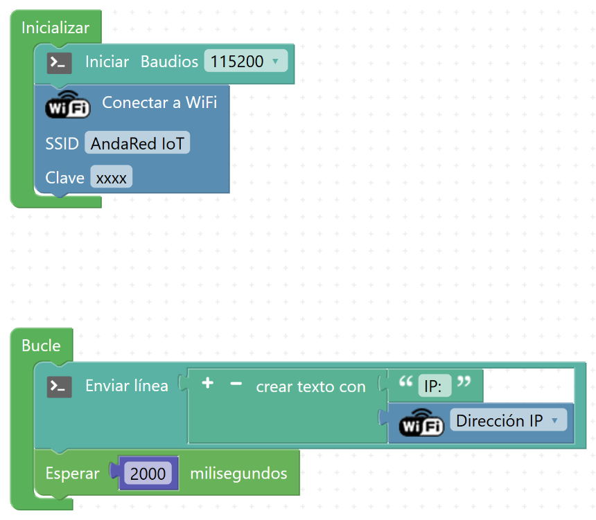
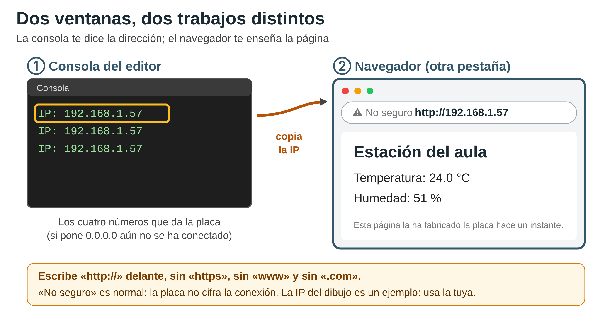
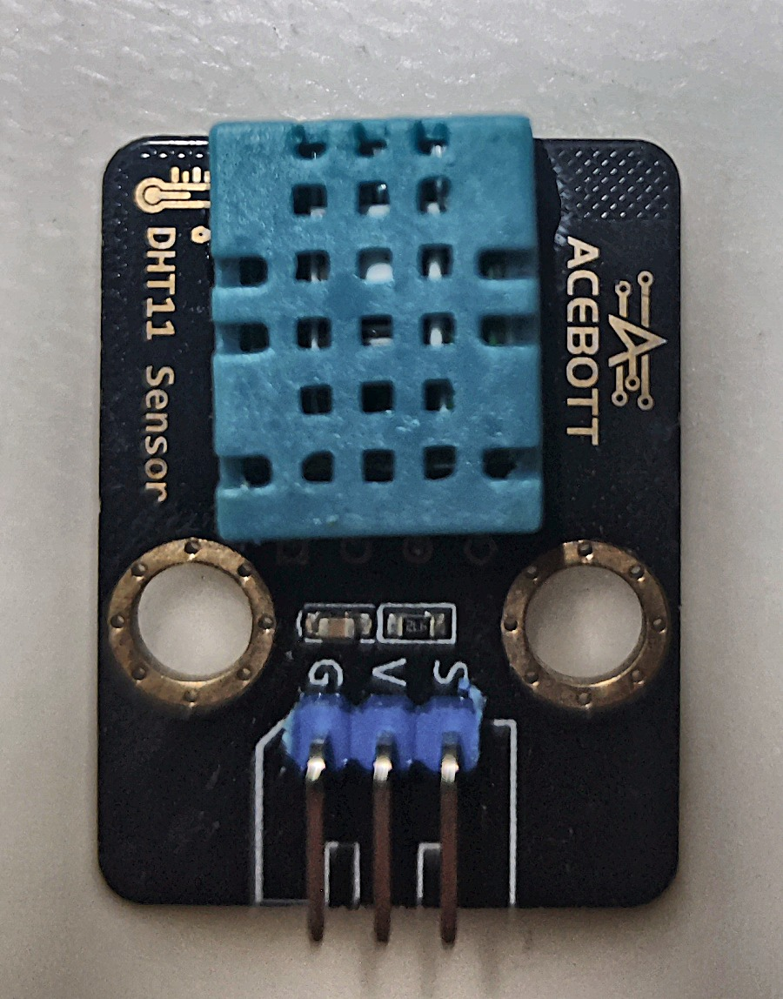
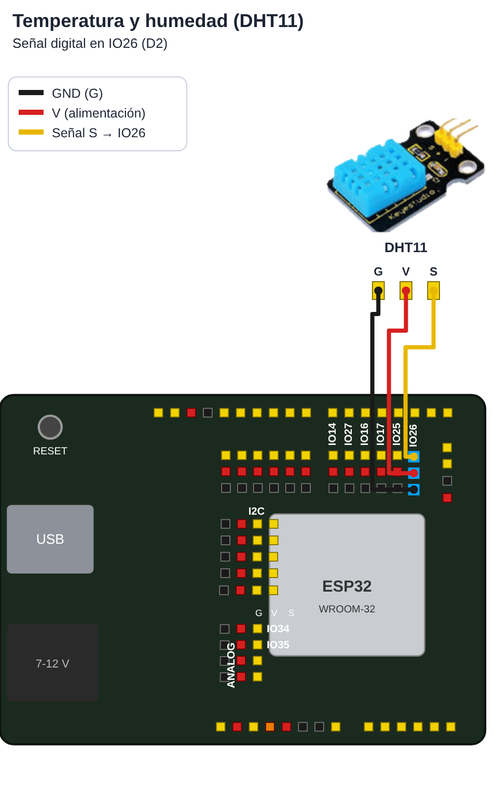
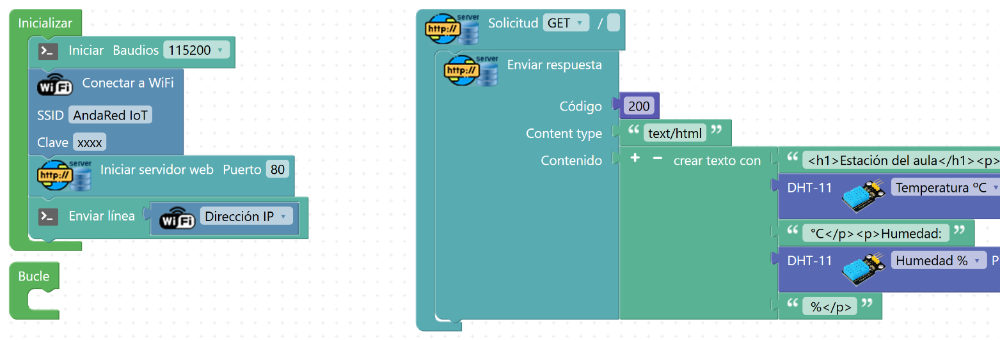
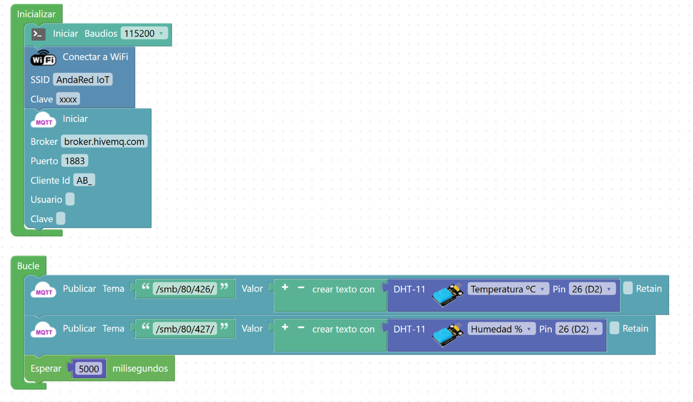
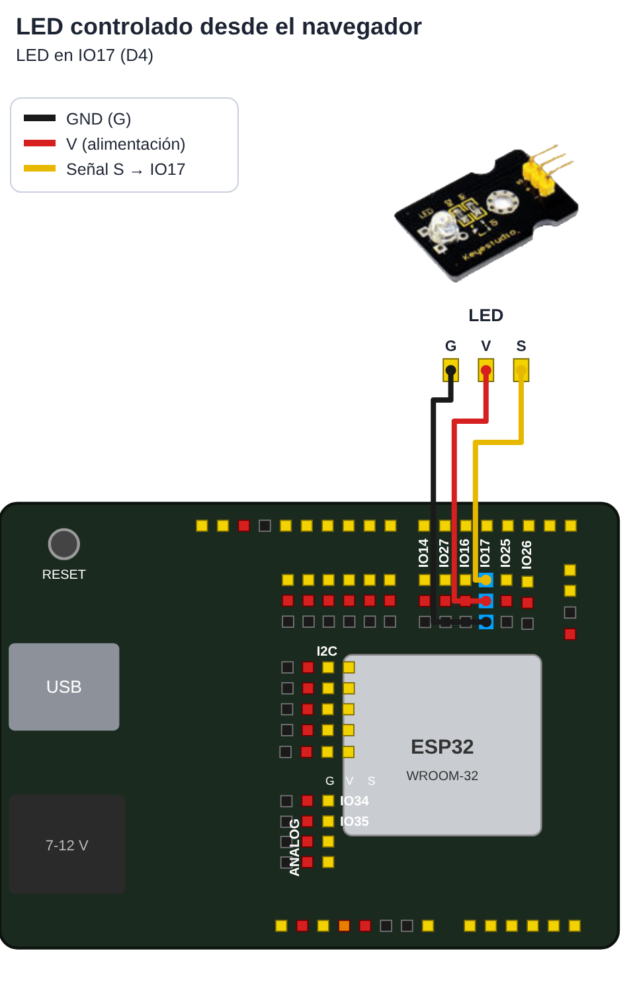
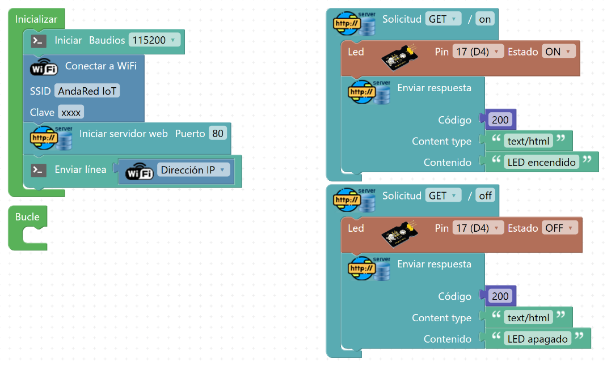

N3 La placa como servidor web
Tu placa se conecta a la red del centro y se convierte en una pequeña página web: cualquier equipo puede abrirla y ver la temperatura y la humedad que mide un sensor DHT11, y también mandarle una orden. Es la base del internet de las cosas y el primer momento del curso en que tu montaje es visible para otras personas.
🧠 Cómo funciona
Hasta ahora has visto lo que hace tu placa desde el ordenador al que está enchufada. Aquí la placa se conecta a la red del centro y se convierte en una pequeña página web: cualquier equipo de esa red puede abrirla y ver la temperatura y la humedad que mide un sensor DHT11.
Cuando escribes una dirección en el navegador, tu equipo (el cliente) pide una página a otro equipo (el servidor), que le contesta con el contenido. Tu placa hace de servidor: espera peticiones y, cuando llega una, mide en ese momento y devuelve una página con el dato. Para encontrarla necesitas su dirección IP, que la red le asigna al conectarse.
{fig('d_n3_viaje','Recorrido de una página: el ordenador la pide, la red la lleva a la placa, la placa la fabrica y la devuelve','Cliente y servidor: cinco pasos desde que escribes la IP hasta que ves la página.')}Importante: la página no está guardada en tu ordenador ni en Internet. Está en la placa, que la construye con los datos del sensor cada vez que alguien la pide. Si desenchufas la placa, la página desaparece.
Cada placa tiene además una dirección MAC, un identificador de fábrica que no cambia. La red del centro admite solo las MAC que el profesor ha dado de alta, y por eso lo primero que haréis es leer la de vuestra placa.
Objetivos
- Conectar la placa a la red y averiguar su MAC y su IP.
- Explicar qué hacen un cliente y un servidor al abrir una página.
- Publicar la temperatura y la humedad de un DHT11 en el navegador.
- Controlar una salida desde el navegador y razonar qué riesgos tiene dejar una placa visible.
📡 P1 · Conectar y presentarte
Sin montar nada más: conecta la placa y lee su MAC y su IP. Lo harás en dos programas muy cortos.
1 · Averigua la MAC

El bloque está en la categoría ESP y se llama «ESP WiFi MAC (texto)». Cuando el profesor confirme que está dada de alta, pasa al segundo programa.
2 · Conéctate y muestra la IP

El bloque «Conectar a WiFi» tiene dos casillas: el nombre de la red (SSID) y la clave. Escribe los que te dé el profesor.
Si no conecta, repasa por orden
🌐 Cómo ver la web que vive en tu placa
Este es el paso en el que más grupos se pierden, así que ve despacio. Cuando la placa está conectada y el servidor iniciado, la página ya existe, pero no aparece sola en ninguna parte: tienes que ir a buscarla con un navegador (Chrome, Firefox, Edge…) escribiendo la dirección de la placa.
Dos ventanas, dos trabajos

| Ventana | Dónde está | Qué ves | Para qué sirve |
|---|---|---|---|
| Consola | En el editor de bloques, junto al programa | Texto que envía la placa, por ejemplo «IP: 192.168.1.57» | Saber qué dirección tiene tu placa y comprobar que se ha conectado |
| Navegador | Una pestaña nueva, en un equipo de la misma red | La página: título, temperatura y humedad | Ver y usar lo que publica la placa |
Paso a paso
- Sube a la placa el programa que muestra la IP (el programa 2 de arriba o el de P2) y abre la Consola.
- Espera unos segundos. Mientras la placa se conecta puede salir «0.0.0.0»; cuando se conecte aparecerán cuatro números separados por puntos, por ejemplo
192.168.1.57. Esa es tu IP. - Abre una pestaña nueva del navegador en un equipo que esté en la misma red que la placa.
- Haz clic en la barra de direcciones y escribe
http://seguido de la IP:http://192.168.1.57. Pulsa Intro. - Debe aparecer tu página. Para ver una medida nueva, recarga la página (tecla F5): la placa vuelve a medir y fabrica otra.
- Anota la IP en tu porfolio: la necesitarás en P3. Si reinicias la placa, la red puede darle otra, así que vuelve a leerla en la consola.
Si no aparece nada
| Lo que ves | Causa probable | Qué hacer |
|---|---|---|
| «No se puede acceder a este sitio» o tarda mucho | El equipo no está en la misma red, la placa no está conectada o la IP está mal copiada | Comprueba la red del equipo, mira la consola y copia la IP otra vez con cuidado |
| Aparece una página de resultados de Google | Falta «http://» al principio | Escríbelo delante de la IP |
| Error de conexión segura | Has escrito «https://» | Cámbialo por «http://» |
| La página sale, pero sin números o con valores raros | El DHT11 está mal conectado o se lee demasiado deprisa | Revisa G, V y S (S a IO26) y espera un segundo entre recargas |
| Funcionaba y ya no | La placa se ha reiniciado y tiene otra IP, o ha perdido tensión | Lee la IP de nuevo en la consola; prueba otro cable USB |
Compruébalo tú mismo
Dos pruebas rápidas para entender dónde está la página. Prueba 1: con la página abierta, desenchufa la placa y recarga. ¿Qué ocurre y por qué? Prueba 2: en la página abierta pulsa Ctrl+U (ver código fuente): verás el texto con etiquetas que fabricó la placa; el navegador es quien lo convierte en título y párrafos.
🌡️ P2 · Temperatura y humedad en el navegador
Situación. El aula quiere una estación meteorológica sencilla: cualquiera de la red del centro debe poder ver la temperatura y la humedad de la clase con solo escribir la IP de la placa.
1 · Esquema de conexiones
El DHT11 es un módulo de tres pines que se monta como los del nivel N1 (G-V-S); la señal va a IO26 (D2). Ojo: no entrega un simple 0 o 1, sino que envía los datos por un solo hilo con un protocolo propio; el bloque «DHT-11» del editor se encarga de leerlo.


🛠️ Montaje y puesta en marcha
- Con la placa desenchufada, conecta G, V y S del DHT11 como en el esquema. Revisa con la lista de comprobación.
- Conecta la placa por USB y construye el programa de abajo con tu nombre de red y tu clave.
- Pulsa Subir y abre la Consola: debe aparecer la IP.
- En un ordenador de la misma red, abre una pestaña nueva y escribe
http://y esa IP (mira la tarjeta «Cómo ver la web que vive en tu placa»). - Sopla sobre el sensor o tápalo con la mano y recarga la página: los valores deben cambiar.
2 · Programa

Fíjate en la forma del programa: el bucle está vacío. El editor atiende el servidor por su cuenta; lo único que escribes es qué contestar cuando llega una petición «GET /» (la dirección raíz). La respuesta es un texto con etiquetas HTML en el que se mezclan frases fijas y las dos lecturas del sensor.
3 · Retos
Título y grupo
Añade un título con el nombre de tu grupo y escribe «Temperatura» y «Humedad» en una etiqueta de párrafo cada una, para que la página se vea ordenada.
Se actualiza sola
Haz que la página se recargue cada pocos segundos sin pulsar nada. Pista: existe una etiqueta HTML «meta» con la opción «refresh» que se escribe en el texto de la respuesta.
Aviso de confort
Añade al texto una frase que cambie según la medida: «Hace calor» por encima de un umbral y «Temperatura agradable» por debajo. Razona qué umbral eliges y comprueba con tu sensor si falla por culpa de la precisión.
Entrega en el porfolio: foto del montaje, captura de la página en el navegador (sin la clave), las dos lecturas con el sensor al aire y tapado, y el programa del reto.
☁️ Ampliación · Tu estación en la nube con Paneles IoT
El servidor web de P2 solo se ve desde la red del centro. Con los Paneles IoT de STEAMakersBlocks, la placa manda sus medidas por internet y las ves en un panel con gráficas desde cualquier dispositivo. Es una ampliación opcional.
Qué es un panel
Un panel es una página con componentes: números, gráficos, indicadores, semicírculos, interruptores y deslizadores, entre otros. Cada componente tiene un «tema» (una dirección del tipo /smb/80/426/) en el que la placa publica su valor. Los números del ejemplo son de muestra: los tuyos los genera el panel.
Pasos
- En STEAMakersBlocks, abre Utilidades → Paneles IoT y crea un panel nuevo, con título y subtítulo.
- En el servidor, pulsa «Use HiveMQ» y acepta el aviso: los campos de conexión se rellenan solos.
- Crea dos componentes: un Gráfico para la temperatura y un Número (o un semicírculo) para la humedad. Anota el tema de cada uno.
- En tu proyecto, conecta la placa a la Wi-Fi, inicia MQTT y publica cada medida en el tema de su componente. El panel permite copiar los bloques de inicio y de publicar y pegarlos en el proyecto desde el menú Utilidades.
- Sube el programa a la placa, pulsa «Run panel» y comprueba que la gráfica se mueve.

Se publica cada cinco segundos: el DHT11 no necesita más, y así no se satura el servidor. Fíjate en que el valor se publica como texto, igual que en ESP-NOW. El componente Número o Gráfico debería mostrarlo como número, pero el manual no lo detalla: compruébalo en tu panel.
💡 P3 · Controlar desde la web
Ahora el camino es el contrario: tú pulsas en el navegador y la placa actúa. Añade un módulo LED en IO17 (D4) y deja el montaje del DHT11 como está, o desmóntalo si necesitas el pin.

Programa

Cada solicitud tiene su dirección: el bloque antepone él solo la barra «/», así que en la casilla escribes solo on u off. Para probar, abre en el navegador http://IP/on y http://IP/off (cambia IP por la de tu placa) y comprueba en la consola qué le llega.
Retos
Una página con botones
Que la respuesta sea una página con dos enlaces, «Encender» y «Apagar», que lleven a /on y /off.
LED según la humedad
Combina P2 y P3: enciende el LED cuando la humedad supere un umbral que elijas y muestra en la página si está encendido.
¿Quién puede mandar?
Tu página no pide ninguna clave. Escribe qué podría hacer alguien que conociera la IP de tu placa y diseña una medida sencilla para limitarlo, por ejemplo un código en la dirección. Razona por qué no es una protección fuerte.
🔒 Seguridad: lo que acabas de publicar
Tu placa responde a cualquiera de la red que escriba su IP, y la comunicación no va cifrada: lo que se envía puede leerse en el camino. Para un zumbador del aula no es grave, pero conviene ser consciente de tres ideas que usarás de nuevo con la inteligencia artificial: no publiques datos personales, no confíes en que una dirección poco conocida sea una protección y no compartas la clave de una red.
📓 Qué anotar en el porfolio
- La MAC y la IP de tu placa, y si cambia al reiniciar.
- Captura de la página de la placa en el navegador (sin la clave de la red a la vista).
- Qué fallos tuvisteis al conectar y cómo los localizasteis.
- La respuesta al reto «¿quién puede mandar?».
✅ Comprueba lo que has aprendido
1. Abres en el ordenador la página de tu placa. ¿Quién es el servidor?
2. Todo está bien en la placa, pero la página no abre desde tu equipo. ¿Qué compruebas primero?
3. ¿Para qué hay que dar la MAC de la placa al profesor?
4. ¿Qué haces con la clave de la red al hacer la captura del porfolio?
5. Tu placa controla un zumbador desde una página sin clave. ¿Qué es cierto?
6. Tu página muestra 24 °C y un termómetro de referencia marca 26 °C. ¿Qué conclusión es más razonable?
7. ¿Dónde está la página que ves al escribir la IP de tu placa?
8. ¿Qué escribes en el navegador para abrir la página de la placa?